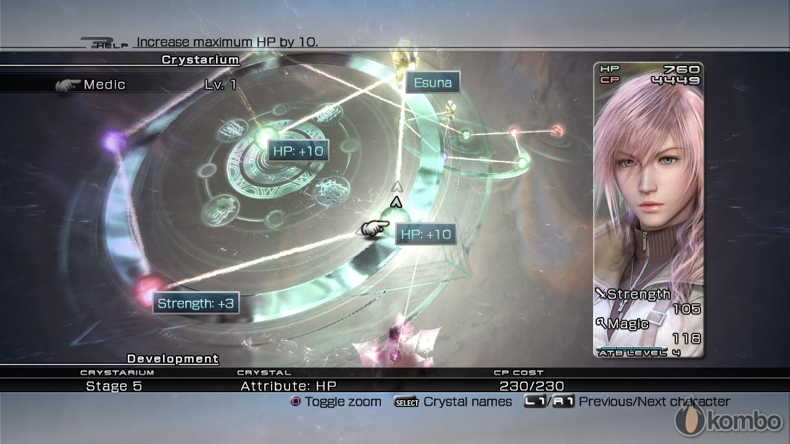
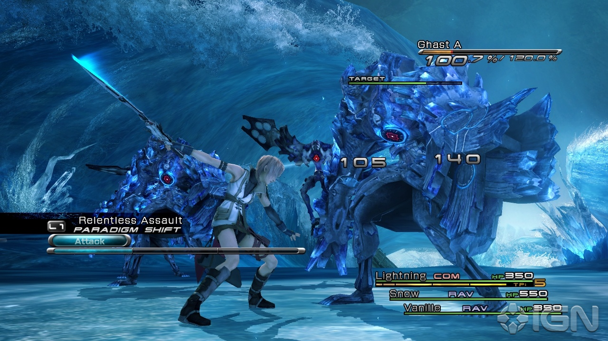
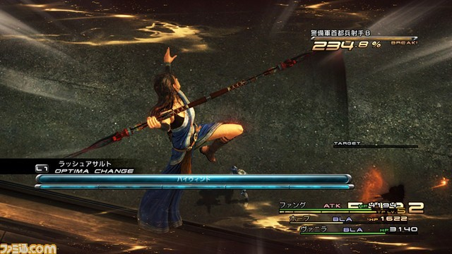
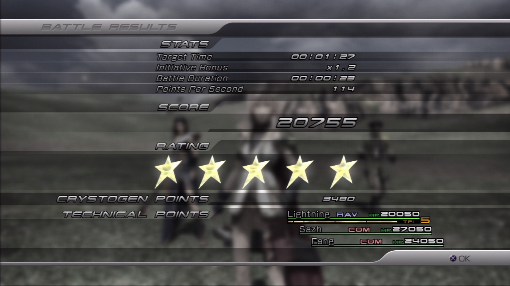

The Battle System
The battle system, called Command Synergy Battle in-game, has been described as "more tactical than Final Fantasy X, faster than Final Fantasy X-2, and almost as seamless as Final Fantasy XII". The enemies are visible in the field. When the player runs into them, the screen lights up and the scene switches to a vast, blank battlefield, marking the start of a battle where the player can control one character out of a party of up to three. After a certain point in the game the lead character can be switched. The game's progression is chapter-based and in most chapters, the player will see the story through different characters' view.
Crystarium
Characters grow in power in a system similar to the Sphere Grid from Final Fantasy X called the Crystarium System. Characters win "Crystogen Points" (CP) in battle, and can use them to purchase stat boosts, spells and other abilities on a circular chart. The skills a character learns affects their ability to learn other skills and opens new paths on the chart — learning Fire, for example, opens a skill path that leads to Fira and other spells.
Active Time Battle
The Active Time Battle bar returns, but this time it is divided into sections. Each command has a numeric value referred to as "ATB Cost" next to the name indicating how many of these sections it will take up. This allows the player to input several commands per turn. The next turn comes up sooner if the ATB bar is only partially used.
Full ATB Skills

Because of the ATB cost determining the moves a player can use, there is no MP in the game. Since magic cannot be used outside of battle, the party's HP is restored after every battle. Full ATB Skills work similar to Limit Breaks from previous games as being character-specific special moves and even if there is no Escape command, the player can leave battle with the Retry option.
Shrouds can be used to move about the field without triggering enemy encounters, and to bestow the party with buffs prior to the battle's start. If the party leader is incapacitated in battle, it will result in a Game Over, but if a battle ends in defeat, the player will simply appear in the point on the field right before the fight was initiated, and they may either re-attempt the battle or leave it.
Stagger Mode
A new element called the Chain Gauge is specific to each enemy, and fills as the player performs attack combos marked by a percentage. Upon filling the gauge the enemy enters "Stagger Mode", where even more damage can be done. Staggered enemies can be launched in the air and juggled with attacks. Staggering is almost essential to winning many battles.
Battle Results

When a battle is won, a Battle Results screen pops up, giving the player a zero-to-five stars ranking on how they did, as well as showing how long the battle took. This information is linked to the Trophy and Achievement systems of PlayStation 3 and Xbox 360, respectively.
Back to Top